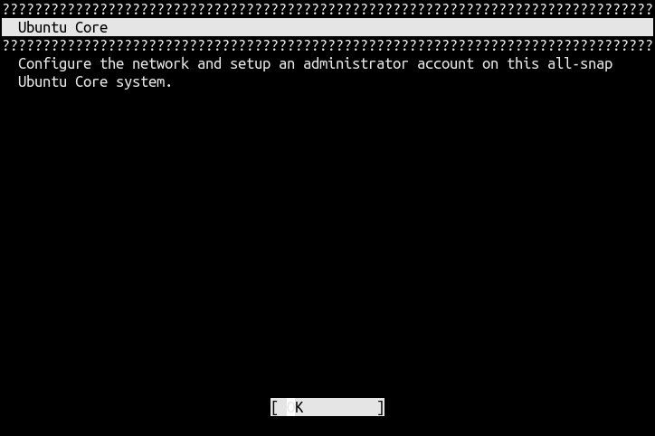

Import raw images into LXD
Introduction
Sometimes I want to quickly test simple things on raw images, and using LXD is a convenient way. This post documents how to import a raw Ubuntu Core image so you can test it.
Importing
LXD needs at least two files: your image in qcow2 format and a metadata file (in a tar file). I will be using the Ubuntu Core 26 image as an example.
First, download the raw image, uncompress it and convert to qcow2:
wget https://cdimage.ubuntu.com/ubuntu-core/26/stable/current/ubuntu-core-26-amd64.img.xz
unxz ubuntu-core-26-amd64.img.xz
qemu-img convert -f raw -O qcow2 ubuntu-core-26-amd64.img ubuntu-core-26-amd64.qcow2
Next, create the metadata file. The example below is a minimal version - other parameters are allowed, but this was the smallest I could get.
architecture: x86_64
creation_date: 1785005800
You can get the creation date by runnning
date +%sto get the Unix timestamp.
Compress the metadata file:
tar cJf metadata.tar.xz metadata.yaml
You can finally import your image by passing metadata and the qcow2 image with:
lxc image import metadata.tar.xz ubuntu-core-26-amd64.qcow2 --alias uc26
Result
After initializing and starting an instance with the console, we can see that Ubuntu Core boots up and I am get into console-conf to configure the system:
lxc init uc26 my-instance --vm
lxc start my-instance --console
